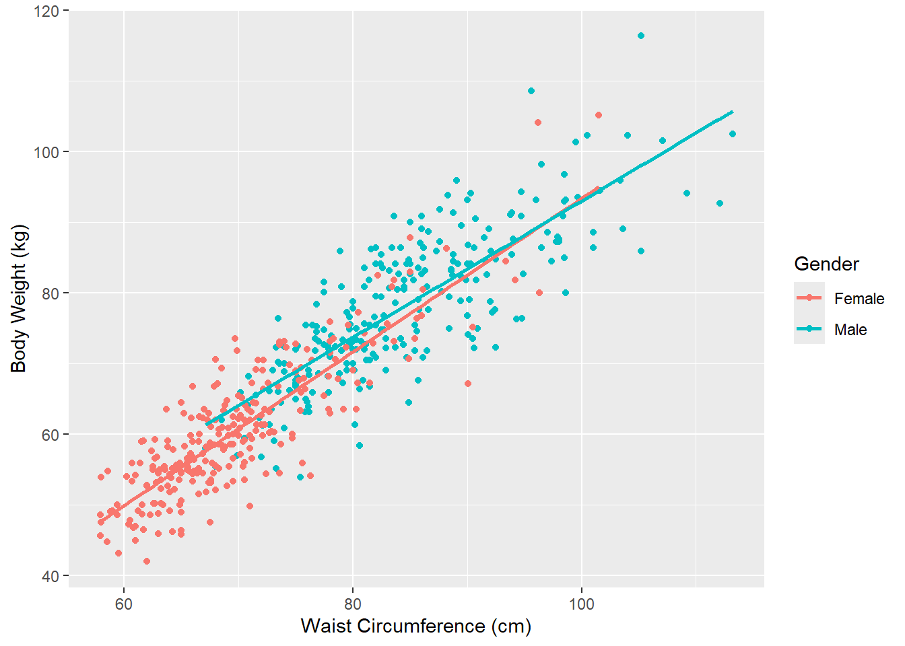
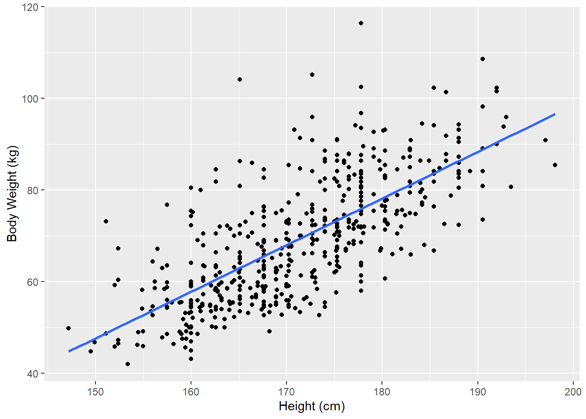
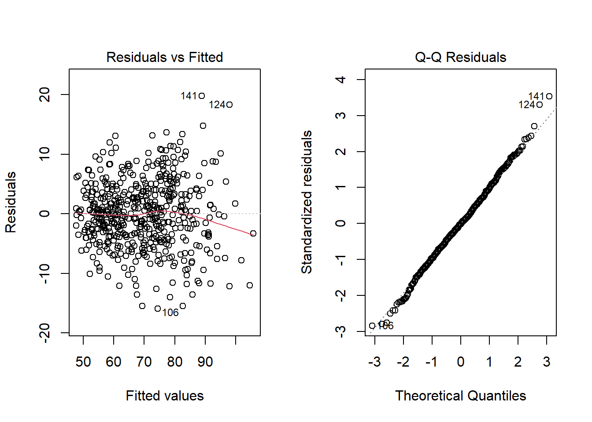

Group n weight_mean weight_sd waist_mean waist_sd
1 Overall 507 69.15 13.35 76.98 11.01
2 Female 260 60.60 9.62 69.80 7.59
3 Male 247 78.14 10.51 84.53 8.78Waist Circumference and Body Weight
Introduction
This project examines a body dimensions dataset containing measurements from 507 active individuals. The dataset includes waist circumference, body weight, height, gender, and other body measurements. This project focuses on the following question. Does the relationship between waist circumference and body weight differ between men and women? I expect waist circumference and body weight to have a positive relationship for both groups. However, the strength of this relationship may differ between men and women.
Weight and total body size are frequently correlated with waist circumference. However, because body composition patterns might change across the sexes, this link can be different for men and women.
Hypotheses
The following regression model was used to investigate if there are gender differences in the relationship between waist circumference and weight:
\[\text{Weight}_i = \beta_0 + \beta_1(\text{Waist}_i) + \beta_2(\text{Male}_i) + \beta_3(\text{Waist}_i \times \text{Male}_i) + \epsilon_i\]
The intercept in this model is represented by \(\beta_0\), the association between female waist circumference and weight by \(\beta_1\), and the difference between males and females when waist circumference is held constant by \(\beta_2\). The difference between the male and female slopes is represented by the interaction coefficient, \(\beta_3\). To determine whether the relationship between waist circumference and weight differs by gender, the interaction coefficient is tested.
Null Hypothesis:
\[H_0: \beta_3 = 0\]
The relationship between waist circumference and weight does not differ between males and females.
Alternative Hypothesis
\[H_A: \beta_3 \neq 0\]
The relationship between waist circumference and weight differs between males and females.
Data Description
The dataset contains 507 observations and 25 variables. These include 260 female participants and 247 male participants. This analysis focuses on body weight, waist circumference, and gender. The remaining variables are not included because they are not necessary to answer the research question. However, height, age, and other body measurements may also be associated with waist circumference and body weight. Not including these variables is a limitation of this analysis. No observations were removed from the variables used in this analysis.
The average weight and waist circumference of the participants were 69.15 kilograms and 76.98 centimeters, respectively. Males had a higher average weight and waist circumference than females. The average weight was 78.14 kilograms for males and 60.60 kilograms for females, while the average waist circumference was 84.53 centimeters for males and 69.80 centimeters for females. These differences motivate further examination of whether the relationship between waist circumference and weight also differs between the two groups.
Variable Description
| Variable | Description | Type |
|---|---|---|
| Body weight | The participant’s body weight measured in kilograms | Numerical |
| Waist circumference | The participant’s waist circumference measured in centimeters | Numerical |
| Gender | The participant’s gender categorized as female or male | Categorical |
Methods
The main regression analysis only considered waist circumference, body weight, and gender. The interaction term tests whether this relationship differs between men and women. The assumptions examined were linearity, normally distributed residuals, constant variance, and independence of observations.
Results

For men and women, the scatterplot demonstrates a positive relationship between waist circumference and weight. Participants with bigger waist circumferences often weighed more. The fitted lines seem to have somewhat varied slopes, indicating that men and women may have different relationships between waist circumference and weight. This visual pattern motivates testing the interaction between waist circumference and gender.
Call:
lm(formula = weight ~ waist_girth + gender, data = body_data)
Residuals:
Min 1Q Median 3Q Max
-15.7406 -3.6998 -0.1216 3.4890 19.1895
Coefficients:
Estimate Std. Error t value Pr(>|t|)
(Intercept) -10.45927 2.16631 -4.828 1.83e-06 ***
waist_girth 1.01800 0.03063 33.238 < 2e-16 ***
genderMale 2.54933 0.67414 3.782 0.000174 ***
---
Signif. codes: 0 '***' 0.001 '**' 0.01 '*' 0.05 '.' 0.1 ' ' 1
Residual standard error: 5.638 on 504 degrees of freedom
Multiple R-squared: 0.8222, Adjusted R-squared: 0.8215
F-statistic: 1166 on 2 and 504 DF, p-value: < 2.2e-16After controlling for waist circumference, males were predicted to have 2.55 kilograms greater weight compared to females with equal waist circumference. This difference was statistically significant (\(p = 0.000174\)). Waist circumference was also a statistically significant predictor of weight (\(p < 2 \times 10^{-16}\)). For each additional centimeter increase in waist circumference, the weight was predicted to be approximately 1.02 kilograms greater. The adjusted \(R^2\) was 0.8215, meaning that the baseline model explained approximately 82.15% of the variation in weight.
Call:
lm(formula = weight ~ waist_girth * gender, data = body_data)
Residuals:
Min 1Q Median 3Q Max
-15.9537 -3.6017 -0.0314 3.6737 19.7893
Coefficients:
Estimate Std. Error t value Pr(>|t|)
(Intercept) -15.27275 3.23206 -4.725 2.98e-06 ***
waist_girth 1.08695 0.04603 23.613 < 2e-16 ***
genderMale 11.94412 4.74072 2.519 0.0121 *
waist_girth:genderMale -0.12315 0.06152 -2.002 0.0458 *
---
Signif. codes: 0 '***' 0.001 '**' 0.01 '*' 0.05 '.' 0.1 ' ' 1
Residual standard error: 5.621 on 503 degrees of freedom
Multiple R-squared: 0.8236, Adjusted R-squared: 0.8226
F-statistic: 783.1 on 3 and 503 DF, p-value: < 2.2e-16Waist circumference had a positive correlation with body weight for both genders. Interaction of waist circumference and gender had a coefficient value of -0.123, a standard error value of 0.062, and a p-value of 0.0458. As the p-value was less than 0.05, the null hypothesis was rejected, implying that there is a difference in the correlation between waist circumference and body weight for the two genders. For a one-centimeter increase in waist circumference, the body weight predicted increased by 1.09 kg for women and 0.96 kg for men.
[1] 0.8215377[1] 0.8225964Analysis of Variance Table
Model 1: weight ~ waist_girth + gender
Model 2: weight ~ waist_girth * gender
Res.Df RSS Df Sum of Sq F Pr(>F)
1 504 16020
2 503 15893 1 126.64 4.0078 0.04583 *
---
Signif. codes: 0 '***' 0.001 '**' 0.01 '*' 0.05 '.' 0.1 ' ' 1The adjusted \(R^2\) improved marginally from 0.8215 in the baseline regression to 0.8226 in the interaction regression. That is, inclusion of the interaction in the model led to only a marginal improvement in the amount of variation in weight accounted for by the model. The ANOVA test gave a p-value of 0.04583, meaning that there was a statistically significant improvement in the fit of the model with the inclusion of the interaction effect at the 0.05 level of significance. Nonetheless, because of the marginal increase in the adjusted \(R^2\) and the p-value being close to 0.05, the results should be interpreted with caution.

Height and weight have a direct correlation implying that apart from waist circumference, other body measurements could be considered when explaining differences in weight. The current study takes into account only waist circumference as an objective measure of one’s body.
Discussion
The results provide limited evidence supporting my initial hypothesis. Waist circumference and body weight were positively related in both males and females. The study also found a small difference in how the two variables were related between the sexes, as the slope of the regression line for females was slightly higher than the slope for males.
This study only considered waist circumference, body weight, and gender. There are other variables in the data set, such as height, age, and other body measurements, that may be related to waist circumference and body weight. Because these variables were not considered, the findings only suggest an association and cannot be used to conclude causation. The study also used data from active individuals, so the findings may not apply to the general population.

The residuals were mostly centered around zero, with a slight pattern at higher fitted values. The Q-Q plot generally followed the reference line. Overall, the model assumptions appeared reasonably satisfied. The independence assumption is reasonable because each row in the data set represents a different participant.